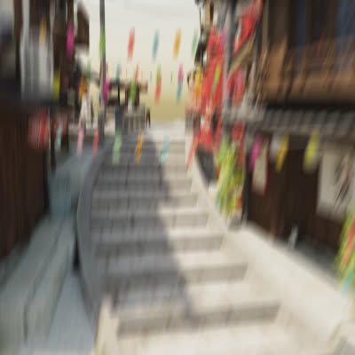
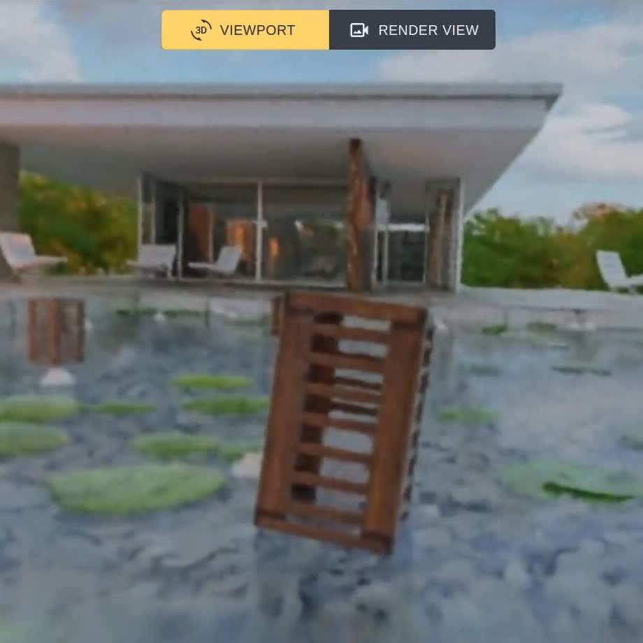

Jan 16, 2023: One paper is accepted to ICLR 2024 .
Feb 28, 2023: One paper is accepted to CVPR 2023 .
Publications
Representative papers are highlighted , * denotes equal contribution.
Your browser does not support the video tag.
Your browser does not support the video tag.
BAD-Gaussians: Bundle Adjusted Deblur Gaussian Splatting
Lingzhe Zhao* ,
Peng Wang* ,
Peidong Liu
arXiv , 2024
project page
/
arXiv
/
code
BAD-Gaussians successfully deblurs severe motion-blurred images, synthesizes higher-quality novel views, and achieves real-time rendering, surpassing previous SOTA implicit deblurring rendering methods.
Your browser does not support the video tag.
USB-NeRF: Unrolling Shutter Bundle Adjusted Neural Radiance Fields
Moyang Li* ,
Peng Wang* ,
Lingzhe Zhao ,
Bangyan Liao ,
Peidong Liu
ICLR , 2024
project page
/
arXiv
/
code
USB-NeRF can remove rolling shutter effect and recover high-fidelity high frame-rate global shutter video from a sequence of rolling shutter images.
Your browser does not support the video tag.

BAD-NeRF: Bundle Adjusted Deblur Neural Radiance Fields
Peng Wang ,
Lingzhe Zhao ,
Ruijie Ma,
Peidong Liu
CVPR , 2023
project page
/
arXiv
/
code
BAD-NeRF jointly learns the 3D representation and optimizes the camera motion trajectories within exposure time from blurry images and inaccurate initial poses.
Nov. 2023 update: we have released the NeRFstudio version BAD-NeRFstudio .
SCL-VI: Self-supervised Context Learning for Visual Inspection of Industrial Defects
Peng Wang ,
Haiming Yao ,
Wenyong Yu
arXiv , 2023
arXiv
/
code
We address the challenge of detecting object defects through the self-supervised learning approach of solving the jigsaw puzzle problem.
Other Projects
Some interesting projects that I worked on, including research projects.
Your browser does not support the video tag.

BAD-NeRFstudio: BAD-NeRF Accelerated
Lingzhe Zhao ,
Peng Wang ,
Peidong Liu
Research Project , 2023
code
BAD-NeRFstudio can shorten the training of BAD-NeRF to minutes.
Selected Awards
Muyuan Fellowship (20000 CNY), Westlake University-Muyuan joint Research Institute, 2022
National Academic First Class Scholarship for Postgraduates, HUST, 2021, 2022
7th in HUAWEI Software Elite Challenge (Huazhong Division), 2020
3rd Prize in China Youth Cup National College Students Mathematical Modeling Competition, 2020
1st Prize of the Robot Innovation Design Competition of HUST, 2019
{kind=link}